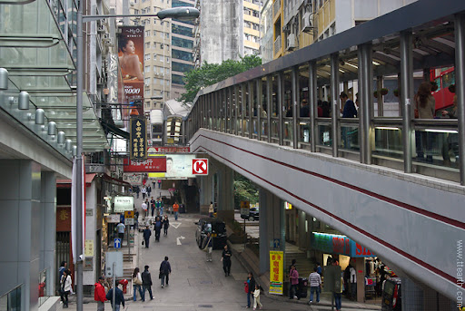

홍콩 · 홍콩섬
도심 속 영화의 무대, 센트럴
홍콩섬의 중심 센트럴은 고층 빌딩과 좁은 골목이 공존하는 지역입니다. 세계에서 가장 긴 옥외 에스컬레이터인 미드레벨 에스컬레이터가 이곳을 가로지르며, 왕가위 영화의 상징적인 장면들이 이 일대에서 촬영되었습니다.
오래된 거리와 현대적 마천루가 어우러진 풍경은 도시 감성 영화 여행의 핵심 코스입니다.
이 지역에서 촬영된 영화
중경삼림 (1994)
여주인공의 집으로 오르내리는 미드레벨 에스컬레이터가 영화의 명장면으로 등장합니다.
화양연화 (2000)
센트럴의 좁은 골목과 계단이 1960년대 홍콩의 정취를 담은 배경으로 쓰였습니다.
근처 명소
미드레벨 에스컬레이터
총 길이 800m의 옥외 에스컬레이터. 중경삼림의 그 장면을 직접 체험할 수 있습니다.
란콰이퐁
센트럴의 대표 나이트라이프 거리. 바와 레스토랑이 밀집해 있습니다.
타이쿤 (대관)
옛 경찰서와 감옥을 개조한 복합 문화공간. 전시와 카페가 어우러집니다.
주변 맛집
딤섬
린흥거 (Lin Heung Tea House)
전통 방식의 카트 딤섬으로 유명한 노포.
로컬
카우키 (九記牛腩)
수십 년 전통의 소고기 국수 맛집. 현지인 줄서는 곳.
카페
NOC 커피
센트럴 감성 카페. 영화 여행 중 잠시 쉬어가기 좋습니다.